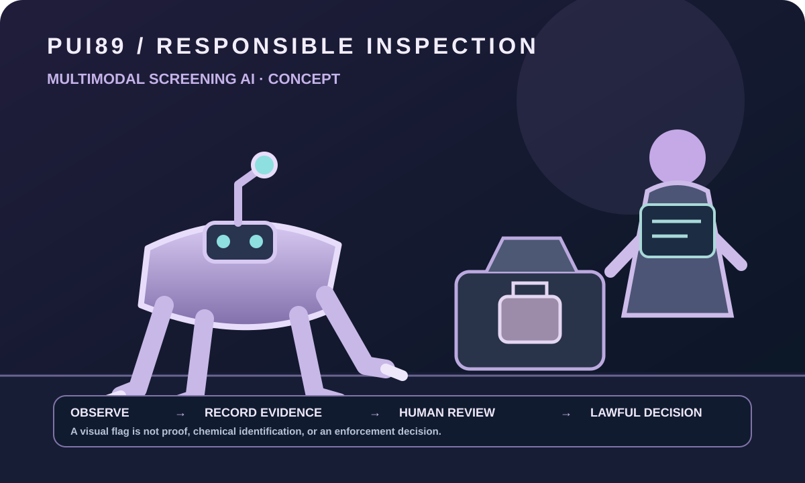

หลักฐานหลายประเภท
ข้อมูลภาพ เซนเซอร์ และเอกสารอาจมีคุณภาพ ความเกี่ยวข้อง และความน่าเชื่อถือแตกต่างกัน
โครงการวิจัยที่เสนอด้านการตรวจสอบหลายรูปแบบ ศึกษาว่าหลักฐานจากแหล่งข้อมูลต่างชนิดกันจะช่วยผู้ตรวจสอบที่ผ่านการฝึกอบรมในสภาพแวดล้อมที่มีการควบคุมและดำเนินการโดยชอบด้วยกฎหมายได้อย่างไร

โครงการอยู่ในขั้นพัฒนากระบวนการซอฟต์แวร์และแนวคิด ยังไม่มีการยืนยันระบบตรวจจับยาเสพติด การระบุสารเคมี การเชื่อมต่อ X-ray สุนัข/หุ่นยนต์ตรวจจับที่ฝึกแล้ว ความแม่นยำภาคสนาม หรือความสามารถตรวจสอบอัตโนมัติ
ข้อมูลภาพ เซนเซอร์ และเอกสารอาจมีคุณภาพ ความเกี่ยวข้อง และความน่าเชื่อถือแตกต่างกัน
ผลบวกลวงอาจส่งผลกระทบต่อบุคคลอย่างไม่เป็นธรรม จึงต้องแสดงความไม่แน่นอนและมีการตรวจสอบอิสระ
การใช้งานต้องมีอำนาจตามกฎหมาย มาตรการคุ้มครองข้อมูล ขอบเขตชัดเจน และมนุษย์ที่ผ่านการฝึกกำกับดูแล
ศึกษาการรับข้อมูลที่ตรวจสอบที่มาได้ การตรวจคุณภาพแต่ละรูปแบบ การจัดการข้อมูลที่ขัดแย้ง การรายงานความไม่แน่นอน และคิวส่งให้มนุษย์ตรวจทาน คะแนนจากโมเดลไม่ใช่หลักฐานยืนยันสารหรือความผิด
อาจศึกษาแนวคิดหุ่นยนต์เคลื่อนที่แบบสี่ขาสำหรับพื้นที่ควบคุม ความสามารถในการเคลื่อนที่ น้ำหนักอุปกรณ์เซนเซอร์ การหลบสิ่งกีดขวาง ระยะเวลาทำงาน และปฏิสัมพันธ์อย่างปลอดภัยยังเป็นโจทย์ออกแบบที่ไม่ได้สร้างหรือยืนยัน
การรู้จำด้วยภาพว่าอาจเป็นบุหรี่ไฟฟ้าแบบใช้แล้วทิ้ง/ใช้ซ้ำ พ็อด ตลับ แทงก์ อะตอมไมเซอร์ หรือภาชนะเติมน้ำยา เป็นเพียงภารกิจตรวจสอบชนิดอุปกรณ์ ข้อความแจ้งเตือนที่ระมัดระวังคือ “อาจเป็นอุปกรณ์บุหรี่ไฟฟ้า — ต้องให้มนุษย์ตรวจสอบ”
การมองเห็นอุปกรณ์ไม่ได้ยืนยันว่าน้ำยามีนิโคติน THC/กัญชา สารควบคุมชนิดอื่น หรือไม่มีสารเหล่านั้น ภาพ RGB ไม่สามารถระบุองค์ประกอบทางเคมีได้ การระบุสารต้องใช้วิธีวิเคราะห์แยกต่างหากที่ผ่านการตรวจสอบ มีการสอบเทียบ การจัดการตัวอย่างตามกฎหมาย ข้อมูลอ้างอิงอิสระ และผู้เชี่ยวชาญตรวจทาน บุหรี่ไฟฟ้าไม่ใช่ยาเสพติดโดยอัตโนมัติ
ข้อมูลเพิ่มเติม: WHO ข้อมูลบุหรี่ไฟฟ้า, WHO คำศัพท์ ENDS/ENNDS และ กรมศุลกากร ควรตรวจสอบกฎหมายปัจจุบันกับผู้เชี่ยวชาญก่อนใช้งานจริง
PUI89 Sentinel เป็นชื่อที่เสนอสำหรับผู้ช่วยตรวจสอบแบบเคลื่อนที่ เป็นแนวคิดเพื่อการวิจัย ไม่ใช่หุ่นยนต์ที่สร้างหรือผ่านการตรวจสอบแล้ว บทบาทของ AI คือวิเคราะห์ข้อมูลนำเข้าที่ได้รับอนุญาต ระบุรูปแบบที่มองเห็นหรือความผิดปกติของเซนเซอร์ สื่อสารความไม่แน่นอน และช่วยเจ้าหน้าที่ที่ผ่านการฝึกพิจารณาว่าควรตรวจสอบเพิ่มเติมหรือไม่
ข้อมูลแต่ละรูปแบบต้องมีที่มาของชุดข้อมูล ข้อมูลอ้างอิงจริง การสอบเทียบเมื่อเกี่ยวข้อง การประเมินอย่างเป็นอิสระ และข้อจำกัดที่บันทึกไว้ การรวมข้อมูลหลายรูปแบบต้องได้รับการประเมินแยกต่างหาก การรวมข้อมูลไม่ได้ทำให้ข้อสรุปน่าเชื่อถือโดยอัตโนมัติ
หลักความปลอดภัย: การแจ้งเตือนจาก AI ไม่ใช่หลักฐานยืนยันยาเสพติดหรือการกระทำผิด ระบบต้องไม่กล่าวหา กักตัว ค้นตัว ยึดทรัพย์ หรือดำเนินการบังคับใช้กฎหมายโดยอัตโนมัติ การดำเนินการที่มีผลกระทบต้องผ่านการตรวจสอบของมนุษย์ที่มีอำนาจและเป็นไปตามขั้นตอนที่กฎหมายกำหนด
โครงการยังอยู่ระหว่างพัฒนา ไม่ใช่ผลิตภัณฑ์สำเร็จรูป
ใช้ NIST AI Risk Management Framework เป็นแนวทางตลอดวงจรชีวิต AI และพิจารณากฎหมายคุ้มครองข้อมูลส่วนบุคคล กฎการจัดซื้อภาครัฐ การจัดการพยานหลักฐาน และหลักสิทธิมนุษยชนที่ใช้ในแต่ละพื้นที่ มาตรฐานความปลอดภัยของเครื่องจักร/หุ่นยนต์ต้องให้ผู้เชี่ยวชาญเลือกตามแบบหุ่นยนต์จริง
เอกสารอ้างอิงเหล่านี้ไม่ได้รับรองโครงการ การรู้จำอุปกรณ์ การระบุสาร และการตัดสินทางกฎหมายเป็นคนละภารกิจและต้องใช้หลักฐานแยกกัน
บุหรี่ไฟฟ้า/อุปกรณ์สูบไอเป็นหมวดตรวจสอบแยกต่างหาก การพบอุปกรณ์ไม่ได้หมายความว่าเป็นยาเสพติด และรูปลักษณ์ไม่สามารถระบุส่วนประกอบของน้ำยาได้ ดู ข้อมูลบุหรี่ไฟฟ้าจาก WHO
นักวิจัยความปลอดภัยสาธารณะ นักวิทยาศาสตร์วิเคราะห์สาร ผู้เชี่ยวชาญความเป็นส่วนตัว วิศวกรหุ่นยนต์ และผู้เชี่ยวชาญที่ได้รับอนุญาตสามารถร่วมทบทวนวัตถุประสงค์ ข้อกำหนดหลักฐาน และมาตรการคุ้มครองมนุษย์
ร่วมสนับสนุนหรือให้ข้อเสนอแนะเปิดคลังโครงการบน GitHub ↗